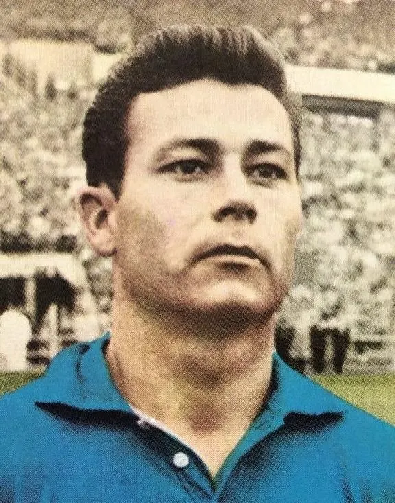

The profile
Just Fontaine
Just Fontaine was born in Marrakech and raised in Casablanca, then part of French Morocco. He moved to France as a young adult to continue his football career.
He scored prolifically for Nice and Stade de Reims before injury ended his playing career early. He was a quick-thinking centre-forward who found space near goal and struck with little hesitation. His scoring at club level prepared him for one of the most remarkable individual tournaments in World Cup history.
Fontaine scored 13 goals in six matches at the 1958 World Cup, a single-tournament record. His goals took France to the semi-finals, and after defeat to Brazil he scored four more against West Germany in the third-place match. France finished third, with Fontaine's relentless finishing turning the team into one of the tournament's strongest attacks.
1958Sweden
Third place
Group B France7 : 3Paraguay
- Just FONTAINE24′
- Just FONTAINE30′
- Roger PIANTONI52′
- Maryan WISNIEWSKI61′
- Just FONTAINE67′
- Raymond KOPA70′
- Jean VINCENT83′
- Florencio AMARILLA20′
- Florencio AMARILLA44′ · pen.
- Jorge ROMERO50′
Francehome
Starting lineup
- Francois REMETTER
- Raymond KAELBEL
- Andre LEROND
- Robert JONQUET
- Jean-Jacques MARCEL
- Armand PENVERNE
- Just FONTAINE
- Raymond KOPA
- Roger PIANTONI
- Jean VINCENT
- Maryan WISNIEWSKI
Substitutions
- No substitutions
Paraguayaway
Starting lineup
- Ramon MAYEREGGER
- Edelmiro AREVALO
- Juan Vicente LEZCANO
- Ignacio ACHUCARRO
- Agustin MIRANDA
- Salvador VILLALBA
- Juan AGUERO
- Jose PARODI
- Jorge ROMERO
- Florencio AMARILLA
- Cayetano RE
Substitutions
- No substitutions
Group B Yugoslavia3 : 2France
- Aleksandar PETAKOVIC16′
- Toza VESELINOVIC63′
- Toza VESELINOVIC88′
- Just FONTAINE4′
- Just FONTAINE85′
Yugoslaviahome
Starting lineup
- Vladimir BEARA
- Tomislav CRNKOVIC
- Novak TOMIC
- Branko ZEBEC
- Dobrosav KRSTIC
- Vujadin BOSKOV
- Dragoslav SEKULARAC
- Milos MILUTINOVIC
- Aleksandar PETAKOVIC
- Toza VESELINOVIC
- Zdravko RAJKOV
Substitutions
- No substitutions
Franceaway
Starting lineup
- Francois REMETTER
- Raymond KAELBEL
- Andre LEROND
- Roger MARCHE
- Robert JONQUET
- Armand PENVERNE
- Just FONTAINE
- Raymond KOPA
- Roger PIANTONI
- Jean VINCENT
- Maryan WISNIEWSKI
Substitutions
- No substitutions
Group B France2 : 1Scotland
- Raymond KOPA22′
- Just FONTAINE44′
- Sammy BAIRD66′
Francehome
Starting lineup
- Claude ABBES
- Raymond KAELBEL
- Andre LEROND
- Robert JONQUET
- Jean-Jacques MARCEL
- Armand PENVERNE
- Just FONTAINE
- Raymond KOPA
- Roger PIANTONI
- Jean VINCENT
- Maryan WISNIEWSKI
Substitutions
- No substitutions
Scotlandaway
Starting lineup
- Bill BROWN
- Eric CALDOW
- John HEWIE
- Bobby EVANS
- Dave MACKAY
- Sammy BAIRD
- Eddie TURNBULL
- Jimmy MURRAY
- Jackie MUDIE
- Bobby COLLINS
- Stuart IMLACH
Substitutions
- No substitutions
Quarter-final France4 : 0Northern Ireland
- Maryan WISNIEWSKI44′
- Just FONTAINE55′
- Just FONTAINE63′
- Roger PIANTONI68′
Francehome
Starting lineup
- Claude ABBES
- Raymond KAELBEL
- Andre LEROND
- Robert JONQUET
- Jean-Jacques MARCEL
- Armand PENVERNE
- Just FONTAINE
- Raymond KOPA
- Roger PIANTONI
- Jean VINCENT
- Maryan WISNIEWSKI
Substitutions
- No substitutions
Northern Irelandaway
Starting lineup
- Harry GREGG
- Willie CUNNINGHAM
- Alfred McMICHAEL
- Richard KEITH
- Danny BLANCHFLOWER
- Jimmy McILROY
- Billy BINGHAM
- Wilbur CUSH
- Peter McPARLAND
- Tommy CASEY
- Jackie SCOTT
Substitutions
- No substitutions
Semi-final Brazil5 : 2France
- VAVA2′
- DIDI39′
- PELE52′
- PELE64′
- PELE75′
- Just FONTAINE9′
- Roger PIANTONI83′
Brazilhome
Starting lineup
- GILMAR
- BELLINI
- NILTON SANTOS
- DE SORDI
- ORLANDO
- DIDI
- ZITO
- Mario ZAGALLO
- PELE
- GARRINCHA
- VAVA
Substitutions
- No substitutions
Franceaway
Starting lineup
- Claude ABBES
- Raymond KAELBEL
- Andre LEROND
- Robert JONQUET
- Jean-Jacques MARCEL
- Armand PENVERNE
- Just FONTAINE
- Raymond KOPA
- Roger PIANTONI
- Jean VINCENT
- Maryan WISNIEWSKI
Substitutions
- No substitutions
Third-place match France6 : 3West Germany
- Just FONTAINE16′
- Raymond KOPA27′ · pen.
- Just FONTAINE36′
- Yvon DOUIS50′
- Just FONTAINE78′
- Just FONTAINE89′
- Hans CIESCLARCZYK18′
- Helmut RAHN52′
- Hans SCHAEFER84′
Francehome
Starting lineup
- Claude ABBES
- Raymond KAELBEL
- Andre LEROND
- Maurice LAFONT
- Jean-Jacques MARCEL
- Armand PENVERNE
- Yvon DOUIS
- Just FONTAINE
- Raymond KOPA
- Jean VINCENT
- Maryan WISNIEWSKI
Substitutions
- No substitutions
West Germanyaway
Starting lineup
- Heinz KWIATKOWSKI
- Herbert ERHARDT
- Heinz WEWERS
- Georg STOLLENWERK
- Karl-Heinz SCHNELLINGER
- Horst SZYMANIAK
- Helmut RAHN
- Hans SCHAEFER
- Hans CIESCLARCZYK
- Alfred KELBASSA
- Hans STURM
Substitutions
- No substitutions